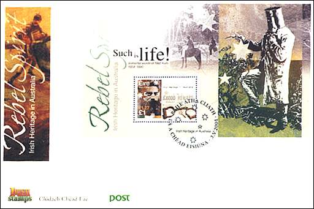

|
Immoral Stamps
Yesterday's Criminals - Today's Heroes?
The Irish Post has issued on 3 May 2001 two sheetlets and a sheet, commemorating "Irish Heritage in Australia". Let's see together which exceptional Irish people, who surely contributed to the development of Australia, are celebrated on these sheets. We will use as reference the "Collectors News" magazine, Issue 2/01, sent to collectors worldwide by the Irish Post. The text marked by quotes and colored is taken from the mentioned magazine.
"There are 4 stamps in the commemorative set, designed by TMT and Passmore Design. Two of them celebrate Australia as the land of promise for many emigrants in a specially designed sheetlet." We won't learn more from the 4 pages dedicated to this issue about these two stamps, so we won't show them here.
"A further two stamps also produced in a special se-tenant sheetlet, recognize the rebel spirit evident in some earlier transporties. Peter Lalor (of Eureka Stockade fame, of course) and Ned Kelly, are the subject covered on these stamps". We won't learn more about Peter Lalor either, so let's concentrate, as the Irish P.A. do, on Ned Kelly, apparently the most important of all, because a whole page is dedicated to this Irish hero. Please start by taking a look at the FDC shown below, and profoundly breathe in before to continue.

"Ned Kelly, the son of a Tipperary ex-convict and migrant Co. Antrim mother, was born in Melbourne in 1854 and grew amidst a raging land war between large landholders (squatters) and small farmers in North Eastern Victoria. From an early age, Ned was known to the police authorities and while still in tens, had already served two and a half years hard labor for innocently receiving a stolen horse. On his release, Ned was a persecuted man, hell bent on defying the officials who made him and his family life so difficult." Yes, the thousand times heard story of an adverse environment that takes away any personal responsibility and give birth to violent monsters, sorry to "rebel spirits". BTW, the story doesn't tell us either why has the mentioned war influenced Ned and his family. Were they among the persecuted farmers?
"He was quickly drawn to the land feud, forming a horse-stealing gang and striking at one of the squatters. When the police officer who was arresting Ned's brother, Dan, for suspect involvement, was wounded, the brothers fled." They stole the horses from whom? Was Dan also a member of the gang? Who wounded the officer? No answers.
"Two weeks later, when Ned tried to disarm four police officers who were pursuing the brothers, three of the officers were killed." How had Ned tried to disarm the police officers? Who killed the officers? Mystery...
"The Kellys and two friends, Joe Byrne and Steve Hart, who happened to be with them that day, became the outlawed Kelly gang, carrying out an ongoing series of raids and bank robberies." Do Joe & Steve liked the killing of police officers and decided to form a gang for this very reason?
"In a dramatic final confrontation in June 1880, Dan, Joe and Steve were killed and Ned, seriously wounded. Arrested, charged and jailed, he was nursed back to health only to be hanged on 18 November 1880." Should he be hanged immediately, without a trial, and being ill (i.e. unable to properly defend himself)?
"The mini-sheet features the familiar image of 'Ned Kelly at Bay', with a photograph of the Kelly Gang in the background. The first day cover features a detail from the 'Capture of Ned Kelly' by Patrick Marony." And also, if we look at the sheet, "the immortal words of Ned Kelly (1854-1880)", "Such is life!" and "Rebel Spirit" written over the painting (this time the quotations refer to the text taken from the sheet, not from the article).
Let's try to summarize. A poor boy with a difficult childhood, who forms a gang, kills police officers and rob banks is presented as a more or less innocent person, who was forced by the circumstances to choose a criminal way. Yesterday he was a criminal, today he is a part of the heritage, and has the privilege not only to be commemorated, but apparently even admired by some nostalgic souls. "Such is life!" - what a life would have the today's Australians if Ned and others like him were the final winners? The life of Ned's victims, for sure.
The stamps as such could be eventually taken as a simple presentation of the past, even if already the choice of subjects is doubtful. With the presented comments of their authors they become immoral.
Do you like this article? Or, on the contrary, you have serious objections. Make use of PASIC Forum to express your opinion or send an e-mail to its author.
|